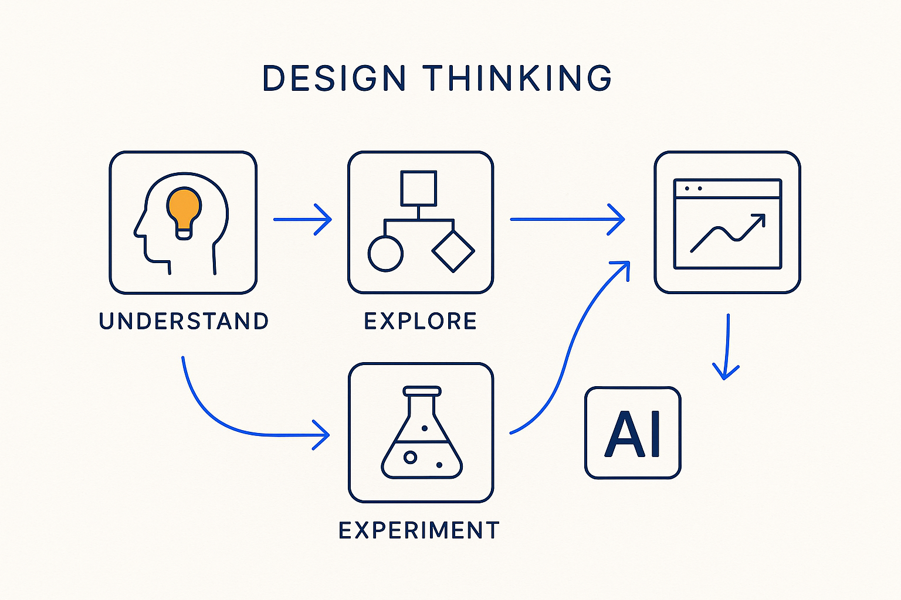

Approach modeling as design: understand the real need, explore options, and experiment fast — and with AI you can now try new methods, build applications and test them at a speed that was impossible before.

> Approach modeling as design: understand the real need, explore options, and experiment fast — and with AI you can now try new methods, build applications and test them at a speed that was impossible before.
Design thinking brings a designer’s stance to modeling and to the way we work: start from the real human need, not the first technical solution; explore several options before committing; prototype and test rather than argue; and iterate on what you learn. It fits Breakthrough Modeling naturally — understand the essence first, question the default, and shape the answer around the people who’ll use it rather than around the tool that happens to be at hand.
At the heart of it is experimentation. You don’t decide the perfect model or process in one shot; you try, observe, and refine. And this is where the new era changes everything: with AI you can experiment incredibly fast. Try a new modeling method, build a small application, generate a prototype, test it against real data — in hours, not months. The cost of a failed experiment used to be high enough that people avoided experimenting at all; now it’s cheap enough that not experimenting is the expensive choice.
Vibe coding is a form of this experimentation: quickly building something rough with AI to see whether the idea holds, before committing to it properly. As a way to *explore*, it’s exactly right — the caution is only not to let that same unspecified, ungated style become how you ship (vibe-driven AI is the anti-pattern in production, not in the sketchpad). Experiment loosely; deliver deliberately.
The other half of experimenting well is knowing when to stop. Don’t linger too long in something that, in the end, may not work. The whole point of fast, cheap experiments is that you can afford to abandon them — so set them up to fail fast, read the signal honestly, and move on without sunk-cost attachment. That speed turns design thinking from a workshop technique into a daily practice. Run the experiment, keep what works, discard what doesn’t, recombine the good parts — and let the fast feedback loop do the deciding. Design the way through by trying it, quickly, and learning in public.
Where it lives: the method layer of Breakthrough Modeling — design by experimenting, fast, with AI.